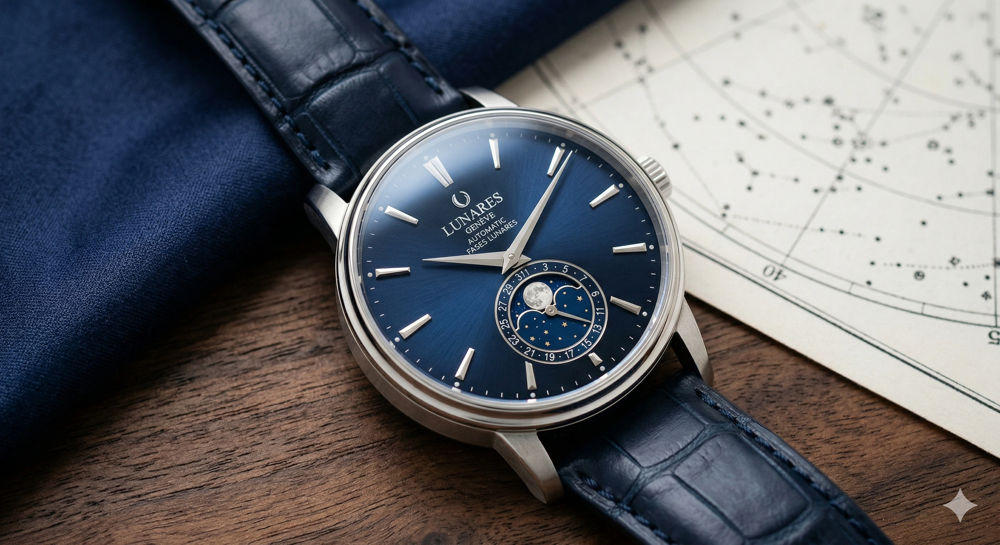
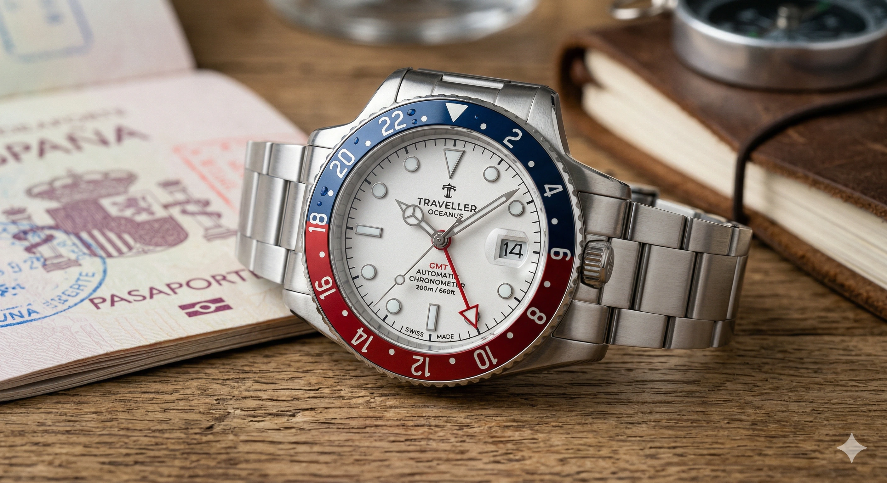
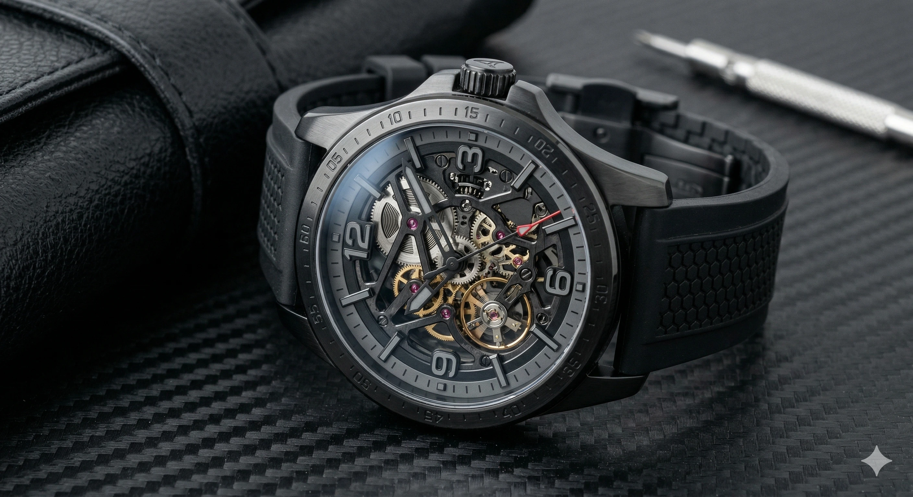
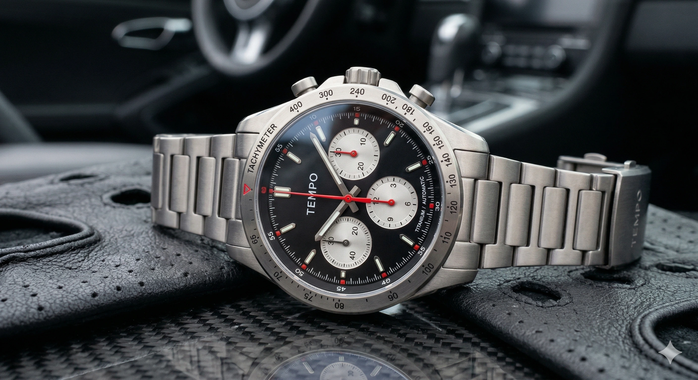
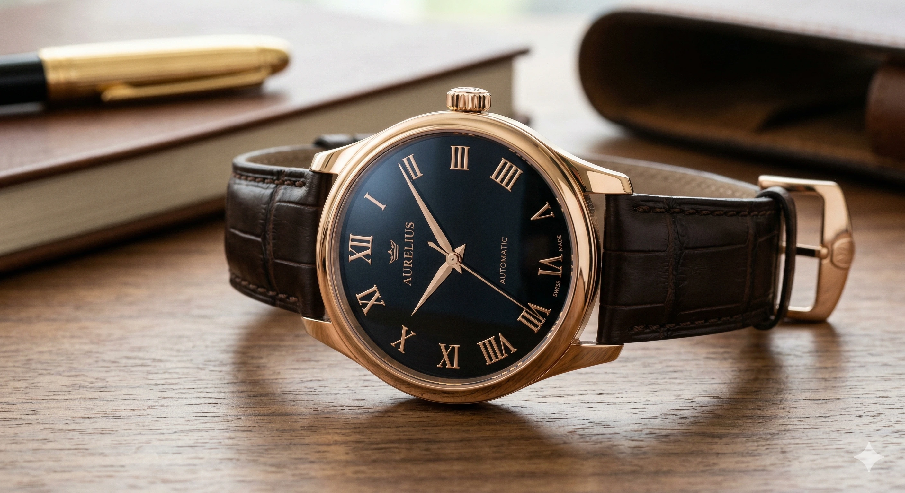
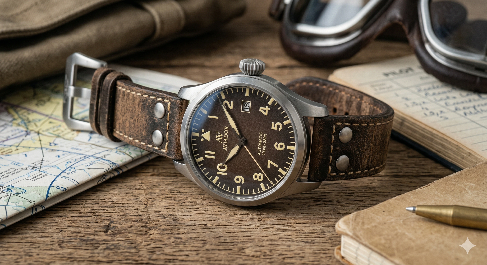
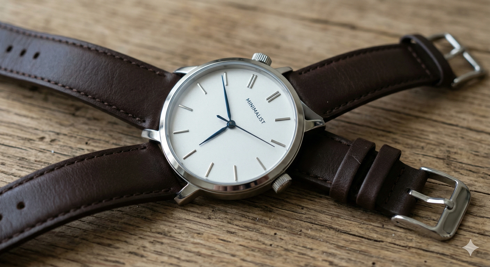

FINE JEWELRY & WATCHES


Luxury Gold presenta una exclusiva colección de relojes de lujo, joyería fina, pulseras, colgantes y accesorios premium diseñados para quienes buscan elegancia, sofisticación y distinción.
Nuestra selección incluye modelos para dama y caballero con acabados de alta calidad, materiales exclusivos y diseños contemporáneos inspirados en el lujo, la exclusividad y la excelencia artesanal.


. La esfera plateada cepillada guilloché es refinada.webp)











